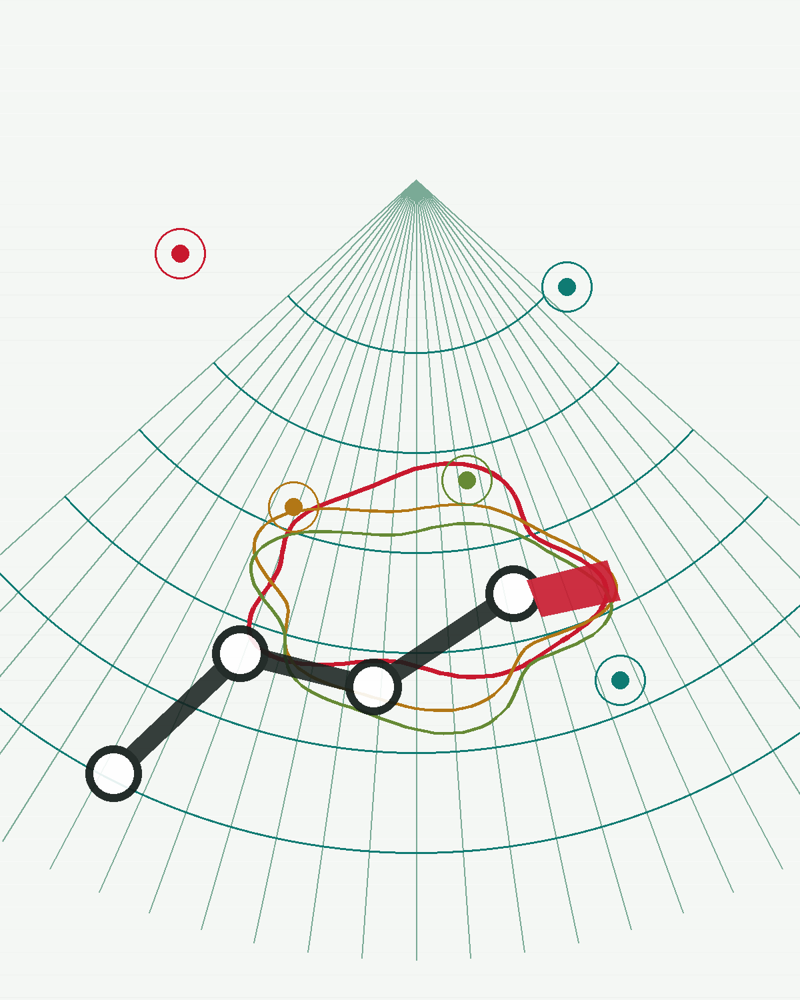

University of Twente - Robotics and Mechatronics
Robotic imaging, smart sensing, and image-guided systems for medicine.

At A Glance
Research
Human intelligence in robotic systems.
The research program connects perception, robotics, medical imaging, and clinical workflows.
Education
Courses and study programs.
Teaching spans robotics, image processing, software development, internships, and project-based academic training.
Affiliated Study Programs
Courses
Publications
Selected recent work.
A compact selection is shown here; full publication lists remain linked through Google Scholar and University of Twente profiles.
Student Supervision
A maintainable home for student work.
The first version defines the structure. Individual thesis summaries, files, and media can be added after a public-safety review.
Future Entry Workflow
Demos
Project media, prototypes, and presentations.
Designed for public demo videos and project highlights without committing large private archives to the site repository.
Contact